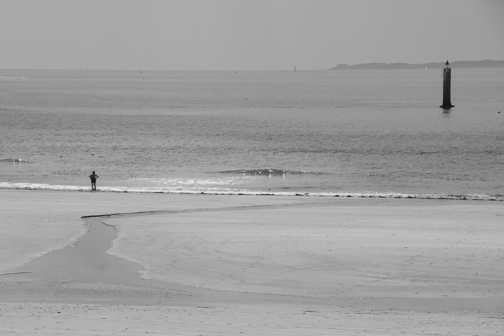
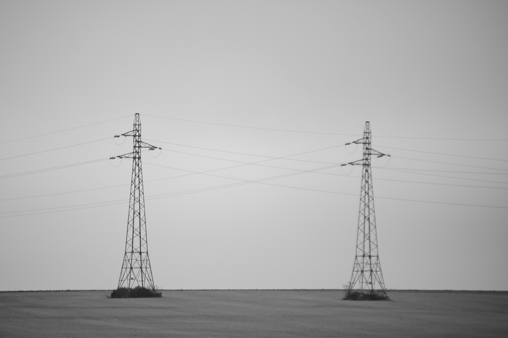
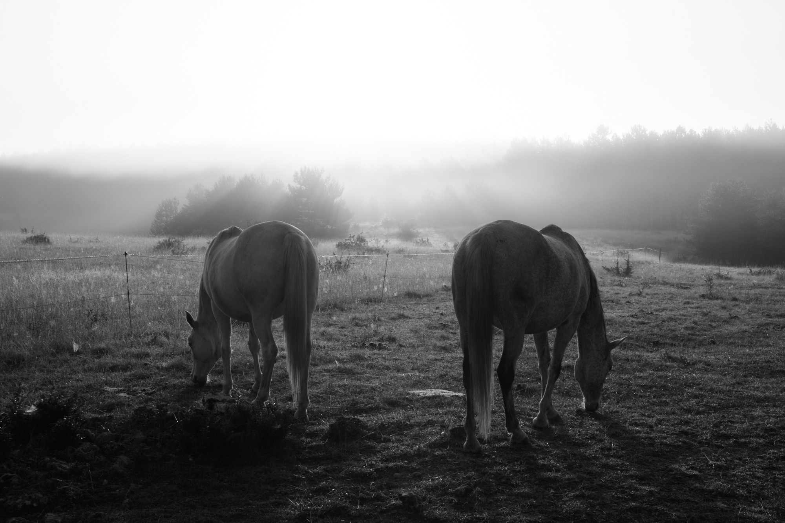
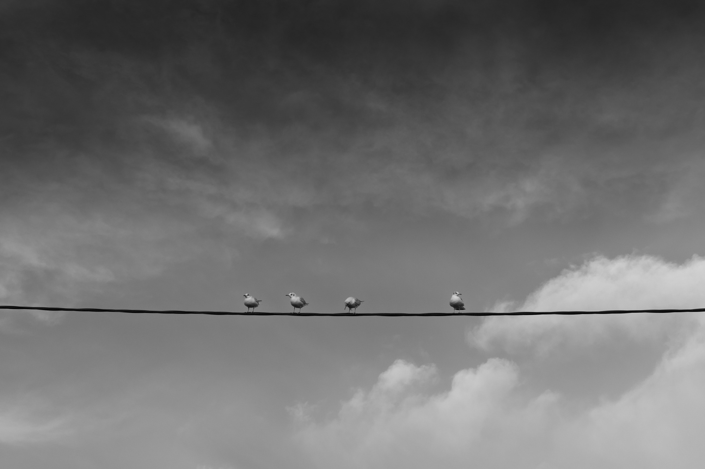
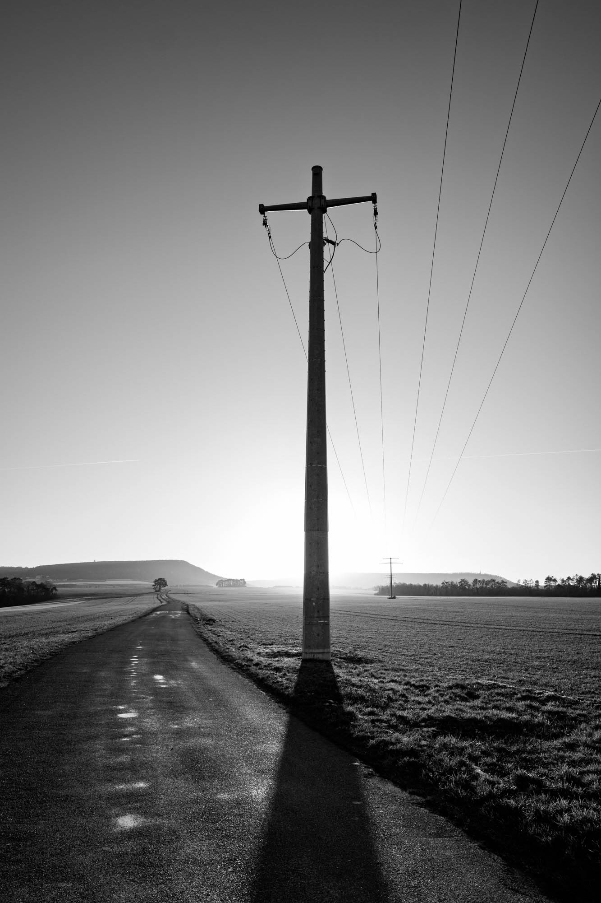
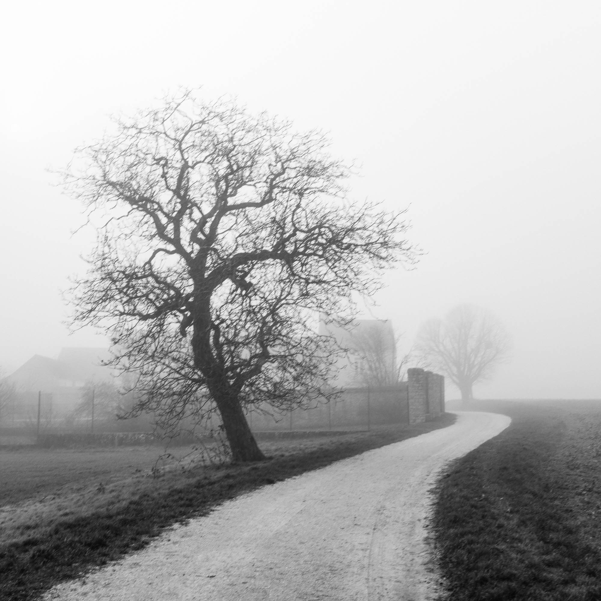

SALLE 01
Ainsi de suite






Une première traversée ne révèle pas tout.
Une autre lecture vous attend plus loin.
SALLE 01






Une première traversée ne révèle pas tout.
Une autre lecture vous attend plus loin.